Guía de presentación — qué pasaba, qué cambió, qué hacer con cheques y tarjetas, y qué revisar en tu empresa antes de usarlo
Este punto no lo pediste vos: lo encontramos revisando el sistema mientras cerrábamos el ticket 721 (las cuentas contables de las facturas) y el 724 (los bienes de uso). Es la misma clase de problema que arreglamos ahí, pero en otros tres comprobantes.
Cuando confirmabas un recibo de cobro, una orden de pago o un egreso, el sistema intentaba generar el asiento contable. Si le faltaba una cuenta (por ejemplo "Cuentas por Cobrar" sin cargar en Contabilidad → Configuración, o un banco sin cuenta contable asociada), el asiento no se generaba, pero el comprobante quedaba confirmado igual: la caja o el banco ya se habían movido, las facturas ya figuraban como pagadas, y nadie se enteraba de que faltaba el asiento. Recién aparecía el hueco cuando el Mayor o el Balance "no cerraban".
Confirmabas, el sistema decía "confirmado" y listo. Si faltaba una cuenta, el asiento se salteaba en silencio. El recibo o la orden quedaba confirmado, con el saldo movido, pero sin asiento en Contabilidad.
Antes de confirmar ves con qué cuentas se va a generar el asiento. Si falta algo, no te deja confirmar y te dice exactamente qué campo falta y dónde cargarlo. O se confirma con su asiento, o no se confirma.
Al hacer clic en Confirmar en un recibo o en una orden de pago, el diálogo ahora tiene un recuadro que se completa solo. Hay tres versiones, según lo que encuentre el sistema.
Un recuadro gris con el título El asiento contable se genera con estas cuentas y una línea por cada cuenta: la de Cuentas por Cobrar o por Pagar, la de cada caja o banco que usaste y la de cada retención. Si algo no te cierra, cancelás sin haber movido nada.
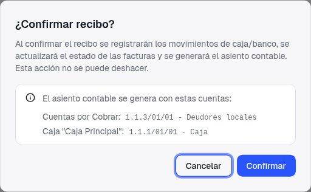
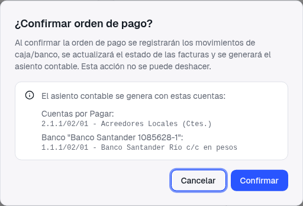
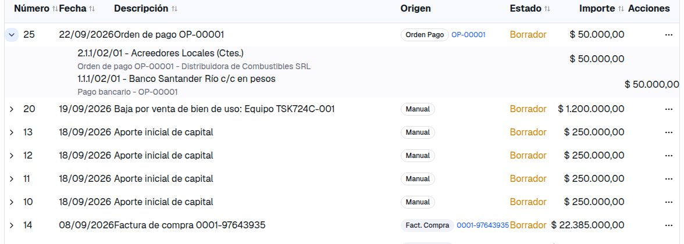
El recuadro se pone rojo, con el título No se va a poder confirmar, y el botón Confirmar queda deshabilitado. El mensaje nombra el comprobante, el campo que falta con el mismo nombre que tiene en la pantalla de configuración y dónde cargarlo. El comprobante queda en Borrador; lo arreglás y volvés a confirmar.
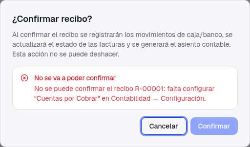
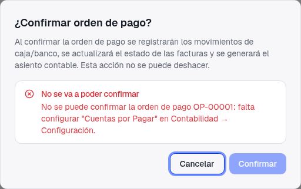
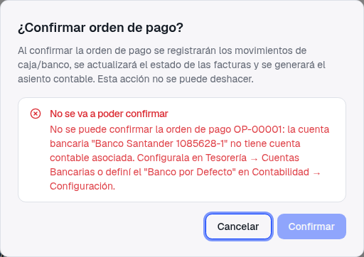
Puede pasar que un recibo o una orden que antes "pasaba" ahora se frene. Eso es correcto: antes pasaba sin asiento. Cuando aparezca el recuadro rojo, no hay nada roto: leé qué campo nombra, cargalo donde te indica y volvé a confirmar. Lo verificamos también en la versión instalada (no solo en desarrollo): el mensaje llega completo.
Acá hay algo que tenés que saber. Hoy el sistema no tiene una cuenta contable definida para algunos medios de pago: los cheques (recibidos, propios o endosados), las tarjetas de crédito, las tarjetas de un socio y la opción Cuenta Corriente. Hasta ahora, un recibo o una orden con uno de esos pagos se confirmaba sin asiento, en silencio, como todo lo demás.
Bloquear esos comprobantes hubiera sido peor: no podrías confirmar ningún cobro con cheque. Por eso, en esta entrega, ese pago no genera línea en el asiento, pero el recibo o la orden se confirma igual, con un aviso claro antes y después:
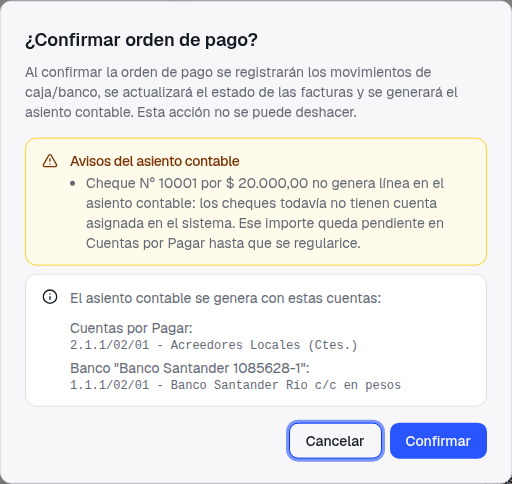
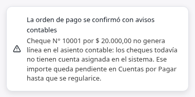
Darle a cada uno de esos medios su cuenta contable (valores a depositar para los cheques recibidos, cheques diferidos a pagar para los propios, tarjetas a pagar, deuda con socios). Cuando eso esté, los cheques y las tarjetas van a generar su línea como cualquier otro pago y estos avisos van a desaparecer. Va en un ticket aparte, junto con la regularización de los importes que hayan quedado pendientes mientras tanto.
Un recibo cobrado solo con un cheque, o una orden pagada solo con tarjeta de crédito, y sin retenciones, no tiene ninguna línea que contabilizar además de Cuentas por Cobrar o por Pagar: el asiento quedaría con una sola línea, que no es un asiento. En ese caso el sistema no deja confirmar, y es a propósito: si lo dejara pasar, estaríamos de vuelta en el comprobante confirmado sin asiento que vinimos a arreglar. El mensaje te dice qué agregar.
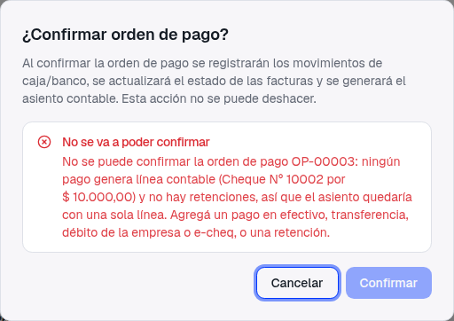
Las órdenes de pago de devolución a un socio nunca generaron asiento (mueven la caja o el banco, pero el asiento de la deuda con el socio se hace a mano). Eso no cambió; lo que cambió es que ahora el diálogo te lo dice: Las órdenes de pago a socios no generan asiento contable.
Los egresos (Comercial → Egresos) no tienen medios de pago, así que no tienen el recuadro de vista previa: el diálogo de confirmar es el de siempre. Lo que cambió es que, al confirmar, el sistema verifica que estén cargadas la "Cuenta de Gastos Operativos" y "Cuentas por Pagar" en Contabilidad → Configuración. Si falta alguna, el egreso no se confirma y el mensaje nombra la cuenta; queda en Borrador hasta que la cargues.
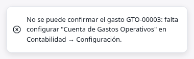
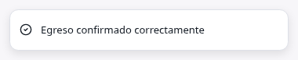
El aviso de presupuesto (cuando el egreso lleva la cuenta de gastos al 80% o más de lo presupuestado en el mes) sigue siendo un aviso: no frena la confirmación, y ahora también se muestra cuando confirmás desde el listado, no solo desde el detalle.
Un detalle que ayuda a no llegar al diálogo con el problema ya cargado. Hasta ahora podías guardar un recibo o una orden con un pago en Efectivo sin elegir la caja, o en Transferencia sin elegir el banco; después no había de dónde sacar la cuenta contable (ni el movimiento de caja). Ahora el formulario lo exige en el momento, con el mensaje debajo del campo.
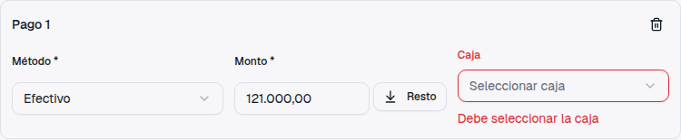
Para que ningún recibo, orden o egreso se frene por configuración, conviene dejar cargado esto una sola vez. Es la misma pantalla de Contabilidad → Configuración de los tickets anteriores, más las cuentas de cada caja y banco.
| Qué | Dónde | Lo usa |
|---|---|---|
| Cuentas por Cobrar | Contabilidad → Configuración | Recibos (y facturas de venta) |
| Cuentas por Pagar | Órdenes de pago y egresos (y facturas de compra) | |
| Cuenta de Gastos Operativos | Egresos | |
| Retenciones que uses: Ret. IVA / Ganancias / IIBB / SUSS, Sufrida para recibos y Emitida para órdenes de pago | Recibos y órdenes de pago con retención | |
| Cuenta contable de cada caja y de cada cuenta bancaria | Tesorería → Cajas y Tesorería → Cuentas Bancarias, al editar cada una. O, para no cargarlas una por una, "Caja por Defecto" y "Banco por Defecto" en Contabilidad → Configuración, que se usan para las que no tengan la suya | Cada pago en efectivo, transferencia, débito o e-cheq |
Esta entrega no toca lo ya confirmado. Si antes de hoy confirmaste recibos, órdenes de pago o egresos y a alguno le faltó el asiento, sigue sin asiento: no lo sabemos hasta mirar la base. Nosotros lo revisamos al instalar esta versión y, si aparece alguno, te pasamos el listado (comprobante, fecha, tercero e importe) para que decidas con tu contador si se genera el asiento a la fecha original o se asienta a mano. No hace falta que hagas nada ahora.